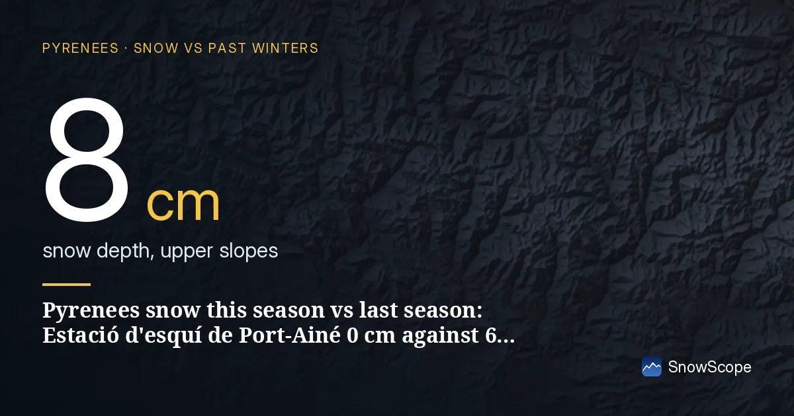
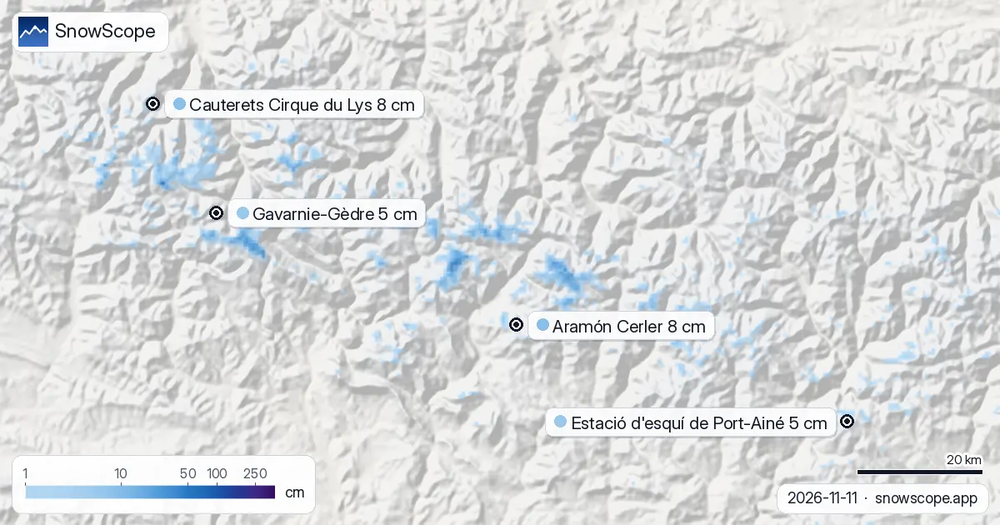
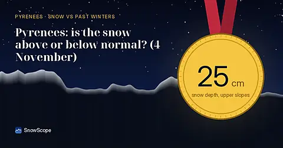

Pyrenees snow this season vs last season: Estació d'esquí de Port-Ainé 0 cm against 6 cm (11 November)
Early November brought almost nothing to the Pyrenees this year. Across four resorts checked on 11 November, every single one sits lower than it did on the same date last winter—and all four are bare or near-bare right now.
See the live snow forecast for Aramón Cerler in the SnowScope appSnow depth, powder alerts and the 3D map, free.
How this week compares with last year
Estació d'esquí de Port-Ainé tells the story: 0 cm today versus 6 cm on 11 November 2025. Aramón Cerler has 0 cm now, down from 4 cm a year ago. Cauterets Cirque du Lys sits at 0 cm against 2 cm last year. Even Gavarnie-Gèdre, the smallest deficit, has 0 cm now where 1 cm lay last November.
This is not unusual for mid-November. On this date, the Pyrenees normally hold only 1 to 2 cm at ski altitudes. The real question is what comes next: last winter built to 103–170 cm by February; this one has yet to drop its first substantial snow.
| Resort | Snow depth | New snow, 72 h | Coming, next days | Top |
|---|---|---|---|---|
| Aramón Cerler | 8 cm | 3 cm | 6 cm | 2,618 m |
| Cauterets Cirque du Lys | 8 cm | 1 cm | 18 cm | 2,420 m |
| Estació d'esquí de Port-Ainé | 5 cm | 0 cm | 1 cm | 2,424 m |
| Gavarnie-Gèdre | 5 cm | 0 cm | 11 cm | 2,283 m |

What the weather stations saw
Ground truth at high altitude: Núria at 1,971 m measured 5 cm on 11 November, with 5 cm of fresh snow that day. Boí, higher at 2,537 m, also held 5 cm but saw no new snow during the past 24 hours. The stations show that snow did fall in the valleys, but it has not yet anchored the upper peaks where ski runs live.
Das—Aeròdrom at 1,096 m measured only 3 cm, confirming that the snow cover this week has been patchy and thin across the range.

No gain yet, no loss yet
By 11 November, neither resort had seen a 10 cm snowfall day this winter; nor had any lost 5 cm or more through melt, rain, or wind. The snow is so sparse that normal mountain processes—a rain event, a föhn wind, autumn sun—barely register on the snowpack at ski level.
This matters for prediction: with zero snow already in place, the first real storm will write the whole story. Last winter also began thin; then February brought 110 cm to Aramón Cerler and 170 cm to Cauterets. This winter's outcome remains entirely open.
What last winter left behind
For context: Cauterets Cirque du Lys peaked at 170 cm on 20 February 2026, the season's high point. Aramón Cerler reached 110 cm on 15 February. Estació d'esquí de Port-Ainé maxed out at 103 cm, also in mid-February. Those three peaks all came late in the season, after a slow early start much like this one.
The pattern across past winters at these heights shows that early November snow is fleeting; the decisive months are December, January, and February. A slow start this week does not predict a poor year.
What matters for the next two weeks
SnowScope shows snow is forecast to build across the Pyrenees through 14 November and beyond. The forecast map will tell you where new flakes will land and which elevations gain soonest. Watch the high peaks (above 2,000 m) for the first sticky accumulation.
Thin early snow is fragile. Rock, grass, and bare ground still show through on many runs even when SnowScope's area map signals coverage. Wait for depth to reach 10–15 cm before committing to a trip, unless you enjoy early-season conditions on compact base.
Tips for skiers
- Early season gaps mean nothing: check the forecast for the next 10 days, not just what is already down. Last winter also started slow.
- Measured snow at high stations (Núria, Boí) versus estimates at resort heights tell different stories. Use both: stations show what fell, resort heights show where you can ski.
- Rocks and grass still show through 5 cm of patchy November snow. Wait for 15 cm or more of consolidated base before booking runs off the main slopes.
- Before any off-piste or touring day, check the official avalanche bulletin for the Pyrenees.
- Snow on SnowScope does not mean a resort is open. Check the resort website for lift dates and grooming plans.
About these numbers
Resort snow depths are the deepest snow on the resort's upper slopes on the date shown; they are estimates for an area, not a measurement at one point. Forecasts can change. Always read the official avalanche bulletin before going off-piste.
Official avalanche bulletins: Météo-France / Meteocat / AEMET
Cite this report
For research, teaching or the press: the numbers and charts are free to reuse under CC BY 4.0 with this citation.
SnowScope (2026), Pyrenees snow this season vs last season: Estació d'esquí de Port-Ainé 0 cm against 6 cm (11 November), https://snowscope.app/blog/en/2026/11/pyrenees-snow-this-season-vs-last-season-11-november-2026.html, accessed 2026-11-11
SnowScope (Atlas Labs). (2026, November 11). Pyrenees snow this season vs last season: Estació d'esquí de Port-Ainé 0 cm against 6 cm (11 November). SnowScope snow reports. https://snowscope.app/blog/en/2026/11/pyrenees-snow-this-season-vs-last-season-11-november-2026.html
BibTeX
@misc{snowscope2026pyreneessnowthisseasonvs,
author = {{SnowScope (Atlas Labs)}},
title = {Pyrenees snow this season vs last season: Estació d'esquí de Port-Ainé 0 cm against 6 cm (11 November)},
year = {2026},
month = nov,
howpublished = {\url{https://snowscope.app/blog/en/2026/11/pyrenees-snow-this-season-vs-last-season-11-november-2026.html}},
note = {Published 2026-11-11 18:44 UTC; accessed 2026-11-11}
}· CC BY 4.0 · Methods, data and tools →
Aramón Cerler: snow and temperature by height, this winter vs last (tools) →
Follow Aramón Cerler
Free: a message when fresh snow is coming, and the forecast every morning.
More snow reports

We compared today's snow at 4 resorts in the Pyrenees with the same date in each of the past 46 winters. 1 of them are clearly above normal.

Pyrenees day passes from 46 EUR: six resorts in France, Spain and Andorra compared by price, then by the snow they usually have in December and January.

Freezing level reaches 3620 m on Sunday 8 November, above Aramón Cerler's 2618 m top, bringing rain-on-snow risk (forecast from 6 November data).